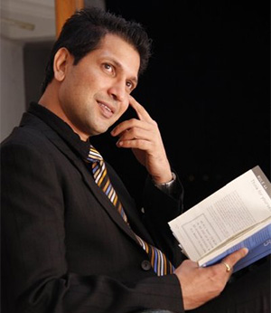

Bobby had come for a family vacation to Mumbai in 1991 and was taking a trip to Film City, where, out of chance he auditioned for Discovery Of India, to be directed by famous filmmaker Shyam Benegal for Doordarshan. After his short stint as a television actor, he returned to Lucknow, only to return back to Mumbai at 1994 as a full-fledged actor. He was selected for the lead role for Zee Television’s new show “ Sab Chalta Hai, Take it Easy ” to be directed by Anil Choudhary . He was also selected as lead actor for Sahara India’s first show, Dreamland Apartments , which was directed by Sunil Sinha and Rajesh Bhatia .
Apart from acting, Bobby also took a keen interest in direction and went on to assist many famous directors. Some of his mentors were Deepak Sarin , for film Rannbhoomi , Dharmesh Darshan for film Looteray , Anil Choudhary for show Phaatichar and Debaloy Dey for film Chandramookhi . A chance luck led Bobby to produce his first television serial called “ Natakhat ” for Zee Television Channel . Bobby produced this show under the banner of Shaktidev Films , after his parents names. He also went on to write and direct the show which was telecast for 5 episodes.
“Change is one of the most important aspect in life. Versatility is the first milestone to the journey of one’s own goals. This is what I do, with every new work. I live my life in a balanced manner and with rewards of pampering myself after finishing a job. Life for me is like air, which becomes the breath and to keep up with my breath, I try to work out on not so regular basis, but make sure I find at least three to four days in a week. I love watching films, you can call me a complete movie buff. I love world cinema. (Talking about good cinema), loves to take up new challenges in life. I believe in making good friends, and yeah I do play cricket with my friends, watch a lot of theatre and find time to read some good books.” Kreative Karma Apart from this ,Bobby vats is the founder of Kreative Karma and has made an acclaimed Short film 'The Cure" Kreative Karma is a visionary step towards compiling the core artistic substance and giving it a desired platform.Their first short film ,The Cure(world's first film on blood phobia) has bagged awards in best short film category in Mumbai short film festival 2015 and nominated in many national and international festivals. The film is now available on you tube.
— Bobby Vats - Founder - Kreative Karma
“My Motto of life keep on changing with time...Finally I am settling for the motto, “Live and learn, and you will learn to Live”
“More of a doer than a dreamer.If you can do or try to do, what you wish to do, then no need to dream.”
“Creating a supermarket of life out of the shop of my existence”
— Bobby Vats - Founder - Kreative Karma